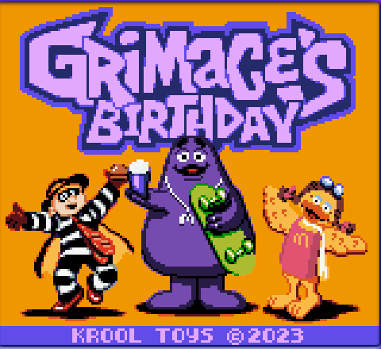
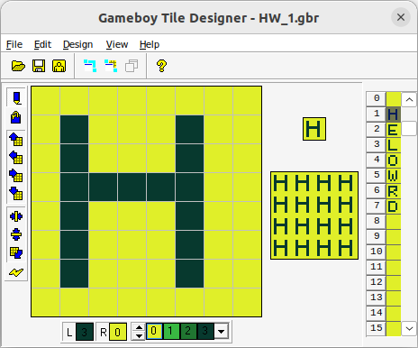

Developing for GameBoy
for Fun and almost certainly No ProfitWhy gameboy?
Instead cut back for time.
What is GameBoy?
Handheld from 1989Z80-ish CPU
8KB RAM
32KB ROM (oversimplified)
160x144 greyish/greenish screen
Some amount of noise making
Tools Not Used

Tools
gbdk-2020
Uses LCC C compiler for Z80
bgb emulator
gbtd tile editor
gbmb tile map editor
Makefile Simple
LCC = ../gbdk/bin/lcc
# You can set the name of the .gb ROM file here
PROJECTNAME = 00_Nothing
all: 00_Nothing.gb
# Compile and link all source files in a single call to LCC
00_Nothing.gb: main.c
$(LCC) -o $@ main.c
clean:
rm -f *.o *.lst *.map *.gb *.ihx *.sym *.cdb *.adb *.asm
Makefile Used
# If you move this project you can change the directory
# to match your GBDK root directory (ex: GBDK_HOME = "C:/GBDK/"
GBDK_HOME = ../gbdk/
LCC = $(GBDK_HOME)bin/lcc
# You can uncomment the line below to turn on debug output
# LCCFLAGS += -debug # Uncomment to enable debug output
# LCCFLAGS += -v # Uncomment for lcc verbose output
# You can set the name of the .gb ROM file here
PROJECTNAME = 01_HelloWorld
BINS = $(PROJECTNAME).gb
CSOURCES := $(wildcard *.c)
all: $(BINS)
# Compile and link all source files in a single call to LCC
$(BINS): $(CSOURCES)
$(LCC) $(LCCFLAGS) -o $@ $(CSOURCES)
clean:
rm -f *.o *.lst *.map *.gb *.ihx *.sym *.cdb *.adb *.asm
Sprites
08 Scoring
Note: Pretty buggy.Conclusion
Things not covered
- Color
- Scrolling
- Saving data
- Endless bank switching
- Mappers
- Serial port
- Making sense of sound
- Debugging
- Profiling
- Unit Testing